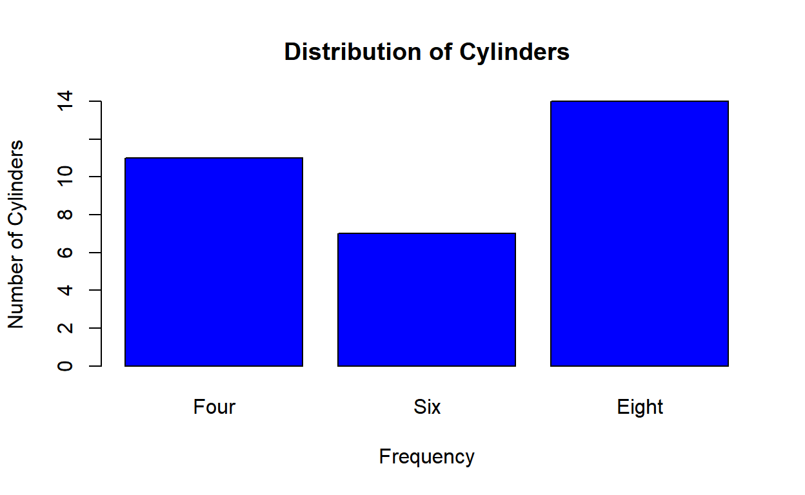

A bar plot represents data in rectangular bars. The length of the bars are proportional to the values they represent. Bar plots can be either horizontal or vertical. The X axis of the plot represents the levels or the categories and the Y axis represents the frequency/count of the variable.
A univariate bar plot represents a single categorical variable. The categories in the variable are represented on the X axis and their frequencies on the Y axis. In the below example, the cyl variable from the mtcars data set is visualized using a bar plot. The categories or levels are 4, 6 and 8 which represent the number of cylinders in the automobile and are represented on the X axis. The frequency for each type of cylinder is represented by the Y axis.

In R, bar plots can be created using either the plot() or barplot() function. The input to both the functions are different. In case of the plot() function, we can specify the variable but it must be converted to a factor variable. In case of the barplot() function, the input must be the count or frequency of the variable. The table() function can be used to generate the counts/frequency for a variable. Let us use both the functions to create the bar plot:
To create a bar plot using the plot function, the data must be categorical/qualitative or in other words, it must be of type factor. If you want to create a bar plot to visualize the distribution of cyl (cylinders) from mtcars, you would use the plot function as shown below:
plot(mtcars$cyl)plot() function to visualize the distribution of referrers from ecom data setplot() function to referrer variable from the ecom data set# bar plot of referrers
plot(____)plot(mtcars$cyl)The barplot() function slightly differs from the plot() function. In the case of the plot() function, we supplied a single categorical variable as the input whereas the barplot() function takes a table as input. To recreate the plot we created in the previous section, you would do the following:
# bar plot of cylinders
barplot(table(mtcars$cyl))Before we explore barplot() further, let us look at the output from the table() function.
# count/frequency of cylinders
table(mtcars$cyl)##
## 4 6 8
## 11 7 14table() to generate counts/frequencies of referrer and store it in ref_freqbarplot() function to ref_freqref_freq <- table(____)
barplot(____)ref_freq <- table(ecom$referrer)
barplot(ref_freq)The labels for the bars in a bar plot come from the data. But it may not be intuitive for a someone who has no knowledge of the underlying data. In such cases, we can make the graph more informative by adding appropriate labels to the bars in the graph. The names.arg argument in barplot() function allows us to modify the labels of the bars. Suppose you want to change the labels of the previous plot. Here is how you would do that:
# modify labels of the bars
barplot(table(mtcars$cyl), names.arg = c('Four', 'Six', 'Eight'))referrer from ecom data using barplot()names.arg to set labels for the barslabel of first bar to 'bing'label of second bar to 'direct'label of third bar to 'google'label of fourth bar to 'social'label of fifth bar to 'yahoo'# modify the label of the barsbarplot(table(ecom$referrer), names.arg = c('bing', 'direct', 'google', 'social', 'yahoo'))The color of the bars in a bar plot is gray by default. It is not a very inspiring color and we will almost certainly want to change it to something more pleasing to the eyes. For example, take the case of the bar plot of cylinders from mtcars data. We may want to modify the color of the bars to blue or red. To do this, we will use the col argument. Below is an example:
# change the color to blue, red and green
barplot(table(mtcars$cyl), col = 'blue')
barplot(table(mtcars$cyl), col = 'red')
barplot(table(mtcars$cyl), col = '#008000')You can specify the color using hex code as well.
referrer from ecom data using barplot()col to set the color of the bars to 'blue''red''#008000'# modify the color of the barsbarplot(table(ecom$referrer), col = 'blue')
barplot(table(ecom$referrer), col = 'red')
barplot(table(ecom$referrer), col = '#008000')Until now, we have been visualizing the distribution of a single categorical variable. Now, let us shift gears and visualize the relationship between two categorical variables. Let us say we want to visualize the relationship between number of cylinders and number of gears from the mtcars data. Here is how we would do it:
# stacked bar plot
barplot(table(mtcars$cyl, mtcars$gear))device and purchase from the ecom data# stacked bar plot# stacked bar plot
barplot(table(ecom$device, ecom$purchase))It is time to learn about another type of bar plot, the grouped bar plot. The difference between the stacked bar plot and the grouped bar plot is related to the positioning of the bars. In the stacked bar plot, the bars are stacked and in the grouped bar plots, the bars are placed adjacent to each other. To create a grouped bar plot, we use the beside argument in the barplot() function. To change the plot from the previous section to a grouped bar plot, we would do this:
# stacked bar plot
barplot(table(mtcars$cyl, mtcars$gear), beside = TRUE)device and purchase from the ecom databeside to TRUE in barplot() to create a grouped bar plot# grouped bar plotbarplot(table(ecom$device, ecom$purchase), beside = TRUE)Bar plots can be horizontal or vertical. So far we have seen vertical bar plots, which are also the default in R. If you want the direction of the bars to horizontal, use the horiz argument. For example, to make the previous plot horizontal, you would modify the code in the following way:
barplot(table(mtcars$cyl), horiz = TRUE)referrer from ecom data using barplot()horiz to TRUE to change the direction of the barsbarplot(table(ecom$referrer), horiz = TRUE)When you have a stacked or grouped bar plot, you have two sets of data being plotted. for example, in the below graph, we have plotted the relationship between cylinders and gears from the mtcars data. We know that each bar represents a particular gear type and the different colors represent the distribution of cylinders for each type of gear. How do we know which color represents which type of cylinder. Here is where legends come into the play. Legends provide information about the data involved in a plot. If you want to add a legend to the bar plot, use the legend.text argument and set its value to TRUE. For example, to add a legend to the plot from the previous section, you would do the following:
barplot(table(mtcars$cyl, mtcars$gear), legend.text = TRUE)referrer from ecom data using barplot()legend.text to TRUE to add a legend to the plot# add a legendbarplot(table(ecom$referrer), legend.text = TRUE)barplot(cyl_freq, col = c('blue', 'red', 'green'), horiz = TRUE, axis.lty = 2,
width = c(1, 1, 2), names.arg = c('Four', 'Six', 'Eight'), offset = 2)
title(main = 'Distribution of Cylinders',
xlab = 'Frequency', ylab = 'Number of Cylinders')